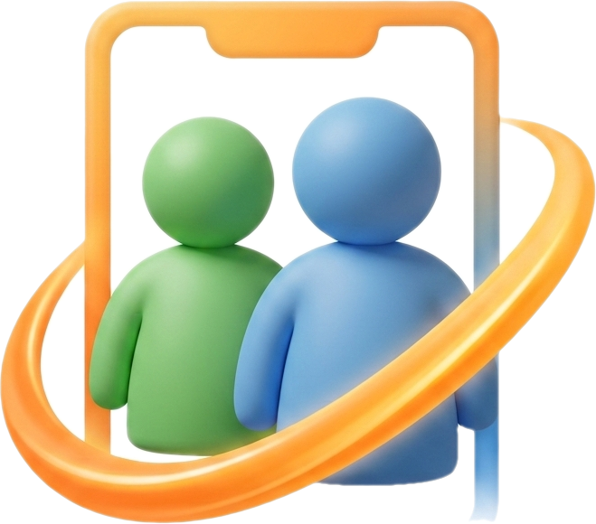

MSN Mobile Social Network
A rede social retrô inspirada no Windows Live Messenger clássico. Converse com seus amigos com aquele visual nostálgico dos anos 2000.
No iPhone/iPad: toque em Compartilhar (⬆️) no Safari e escolha “Adicionar à Tela de Início” para instalar o app.
Você já tem o app instalado neste dispositivo. 🎉